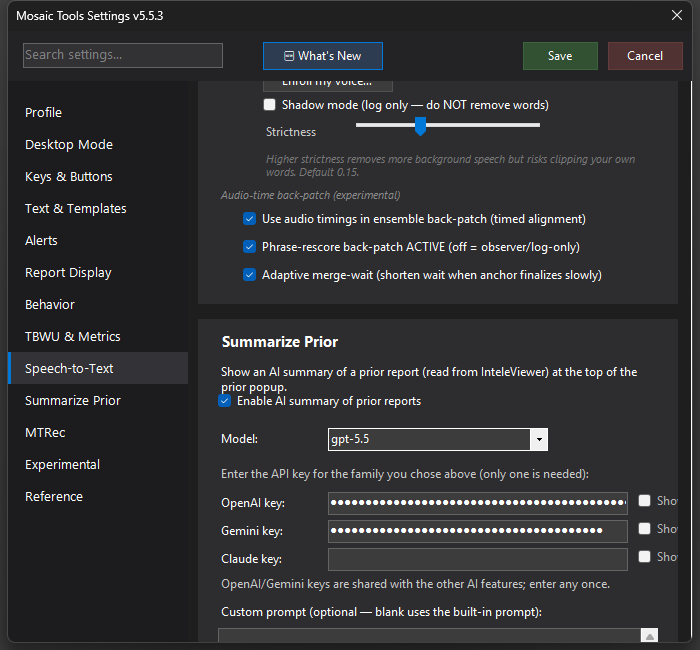

Summarize Prior
Opens the prior report from InteleViewer in a popup with a short AI summary on top — the gist of the prior in five seconds, full text below if you want it.

What it does
With InteleViewer active, Summarize Prior reads the prior report straight from InteleViewer's Search Tool (via Java Access Bridge — no clipboard, no clicking), cleans up the formatting, and shows it in a popup with a short AI-generated summary at the top: 1–4 telegraphic bullets covering the positive findings, any follow-up the prior recommended, and — because your current study's clinical history is sent along as context — the pertinent negative that answers today's question. A negative prior comes back as a single line ("Prior shoulder XR negative"), not a list of everything normal. The full formatted prior sits below the summary for when you need the detail.
How to turn it on / set it up
- Settings → Summarize Prior → check Enable AI summary of prior reports.
- Pick a Model — the family picks the provider:
gpt-*→ OpenAI,gemini-*→ Google,claude-*→ Anthropic. You can type a custom model name. - Enter the matching API key (OpenAI key / Gemini key / Claude key — only one is needed). The OpenAI and Gemini keys are shared with Custom STT and Custom Process Report, so if you've entered one there it's already filled in.
- Optionally set a Custom prompt to override the built-in summary instructions.
- Map the Summarize Prior action under Keys & Buttons.
These are paid cloud APIs — a summary costs a fraction of a cent, billed to your own key.
Using it
Open the prior in InteleViewer's Search Tool, trigger the action. The popup shows "Summarizing…" and fills in as the model responds; the header shows "Prior:
Tips & gotchas
- Summaries are cached per study: dismiss the popup and re-summon the same prior (or flip between a few priors on one patient) and the saved summary reappears instantly with no second AI call. The cache clears on the next study.
- The summary preserves the prior's own hedging — "probable" stays "probable"; it will not upgrade qualifiers.
- If the summary errors or your key is blank, you still get the full formatted prior — the popup degrades gracefully.